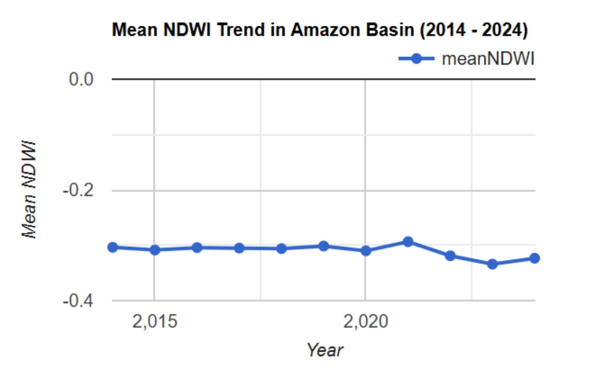

Perubahan pada Sungai Amazon
Sungai Amazon mengalami penurunan muka air semenjak tahun 2022.
Sungai Amazon adalah salah satu sungai terbesar di dunia. Dengan panjang sekitar 6400 km yang membentang di sembilan negara di antaranya Brasil, Peru, Bolivia, Kolombia, Ekuador, Venezuela, Guyana, dan Suriname (Pradana, 2022). Dengan panjangnya yang sedemikian rupa, maka hal yang lumrah jika sungai ini memiliki kekayaan sumber daya alam yang melimpah. Dinyatakan bahwa sekitar 60% spesies di muka bumi ini terkonsentrasi di wilayah yang dilalui sungai ini. Sebagai sungai yang menjadi tempat untuk bertumbuh dan berkembang bagi hampir 60% spesies, menjadikan upaya untuk menjaga keberlangsungan makhluk hidup di wilayah ini menjadi hal yang penting.
Namun, jika ditilik lebih jauh pada beberapa tahun terakhir tercatat bahwa terdapat penurunan muka air dari sungai ini. Penurunan tersebut diperkirakan terjadi sejak tahun 2022. Estimasi penurunan ini dihitung dengan menggunakan Normalized Difference Water Index (NDWI).

| Tahun | Nilai Penurunan NDWI |
|---|---|
| 2014 | -0.302 |
| 2015 | -0.302 |
| 2016 | -0.304 |
| 2017 | -0.306 |
| 2018 | -0.312 |
| 2019 | -0.303 |
| 2020 | -0.306 |
| 2021 | -0.298 |
| 2022 | -0.322 |
| 2023 | -0.333 |
| 2024 | -0.325 |
Fenomena penurunan ini bisa disebabkan oleh beberapa hal seperti penurunan curah hujan, laju deforestasi, perubahan iklim, dan lainnya. Menurunnya curah hujan di wilayah Amazon dapat menyebabkan berkurangnya pasokan air di sungai, yang pada akhirnya menurunkan tinggi muka air. Kondisi ini sering kali terkait dengan perubahan pola iklim global yang menyebabkan musim kering lebih panjang dan intens, mengurangi aliran air secara keseluruhan. Deforestasi juga memiliki dampak signifikan terhadap tinggi muka air. Ketika hutan ditebangi, kapasitas tanah untuk menahan dan menyerap air menurun drastis. Pepohonan yang biasanya menyerap air hujan dan menyimpannya dalam tanah sebagai cadangan tidak lagi berfungsi. Di sisi lain, perubahan iklim memperburuk kondisi ini melalui kenaikan suhu dan perubahan pola cuaca, seperti berkurangnya kelembaban dan intensitas hujan di kawasan tropis. Pemanasan global meningkatkan penguapan dari permukaan air, sehingga volume air di sungai dan danau berkurang secara signifikan. Hal ini juga menyebabkan pergeseran musim hujan dan kering yang mempengaruhi stabilitas aliran air di Amazon.